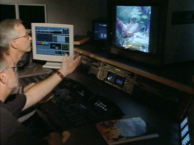

Digital Restoration
At the point where Gluck and his team have consulted all the research they have collated, they agree on their “educated, noncombative guess,” and proceed to digitally scan the film at 4K resolution to get ready for digital cleanup. The company’s preferred vendor for all their scanning and digital cleanup is DTS Digital Images (formerly Lowry Digital Images:

Restoration Practices
Digital cleanup and final output

Photo © Disney
After DTS has done its first pass on these cleanup processes, Gluck and his team have what he calls their “Mystery Science Theater 3000” screenings, where they view the cleaned film and point out inconsistencies and flaws. Many of these flaws are actually NOT from the DTS cleanup, they are flaws from the original film itself. The classic example that many people know about is a scene in Bambi where a raccoon mother is cleaning her baby, and suddenly for three frames the baby disappears. On the most recent DVD release, the decision was made to repaint in the baby, about which Gluck replied “These are not the droids you are looking for.” Gluck elaborates on the carefulness with which the team approaches these decisions:
DTS uses a proprietary system for their various cleanup processes, which might include noise reduction, grain reduction, color correction and sharpening. These processes have been perfected over the years by a series of trial and error. Stephen Worth detailed some of the main pitfalls of using older noise reduction processes like DVNR (Digital Video Noise Reduction) in animation specifically, which include “artifacts” or visible footprints left by the digital process. These may include jagged edge lines, compromised character ink outlines and ghosting (for more on the problems with using DVNR in animation, see this article: http://www.awn.com/mag/issue3.12/3.12pages/amididvnr.php3).

(left) A strip of film being scanned at DTS
Photo © Disney

(left and below ) DTS digitally cleans up the scanned files for Bambi
Photos © Disney
“We sometimes have huge debates as to what should and shouldn’t be taken out, paper textures, mismatched colors that they’ve painted on, etc. Dave Bossert is usually the voice of reason … and he’s got a very good eye and is very passionate about what should be kept in and out. Like I said, it is an informed consensus. But Snow White is not a blonde because of it. No one takes this lightly.”
Lowry makes it simple for the animators to pinpoint the location of these flaws by burning in visible frame and reel numbers on their dailies. On subsequent passes the versions are available online as well, which makes it easier to communicate across separate office locations.
One thing that Disney makes sure to do is to make NEW film negatives directly from the scanned print. This allows them to go back to the original, before any digital processes have been applied, any time they want in case new DVD technologies like Blu-Ray demand that Disney re-release these films down the road. But Gluck maintains that the high resolution at which these prints were scanned and care the team takes in restoring them ensures a result that will not need much further improvement down the line,
“There may not even be on Bambi barely even 1K worth of resolution when you factor in 1939 stocks, grain structure and optics of the day. By scanning it at 4K we are unquestionably getting everything that’s on that piece of film.”
Essentially, the Disney restoration team is a well-oiled and highly-advanced machine - a machine with a keen eye for color and aesthetics. The company has a lot to live up to and consumers can be harsh critics. But they are taking information from many places and filtering it through the lens of a framework based not only in history and aesthetics but a market-driven economy. That in itself is a lot to live up to.
For more detailed information about the specifics of the restoration process, see the Theo Gluck podcast on this site. For more on some of the criticisms of the larger animation and consumer community, see the Stephen Worth podcast.


(above) The same frame from two different releases from Bambi - in the first laserdisc release version (left) the restorers chose to leave the disappearing raccoon baby out of the shot, but the most recent DVD version (right) has the baby painted back in with an image from an adjacent frame.
*For more release comparisons, see the “Side by Side Comparisons” entry on this site*
Photos © Disney